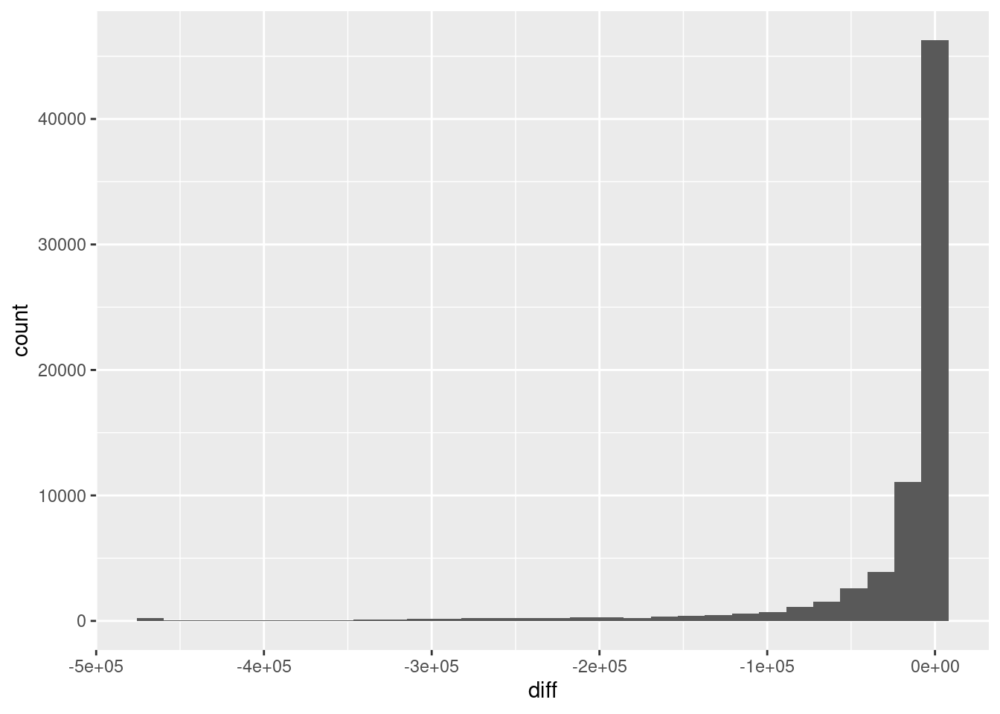
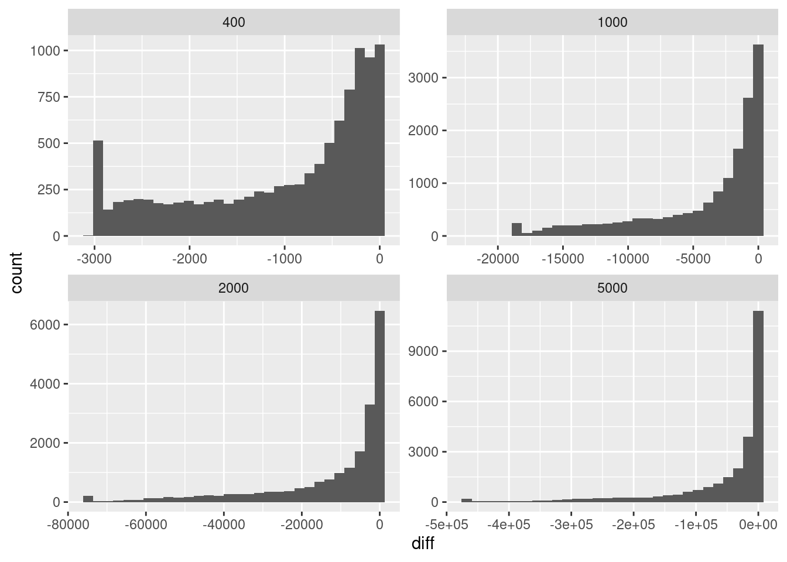
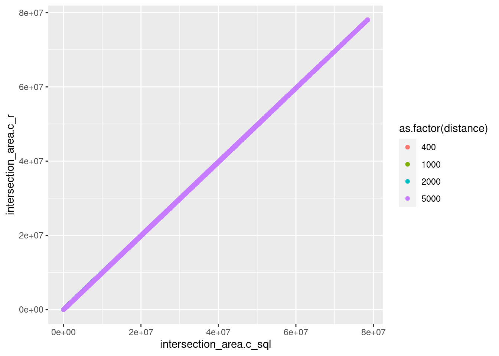
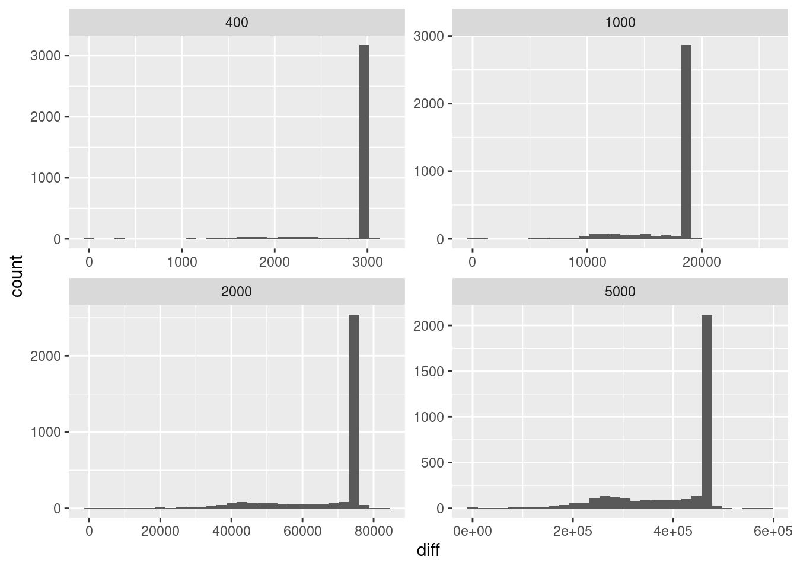
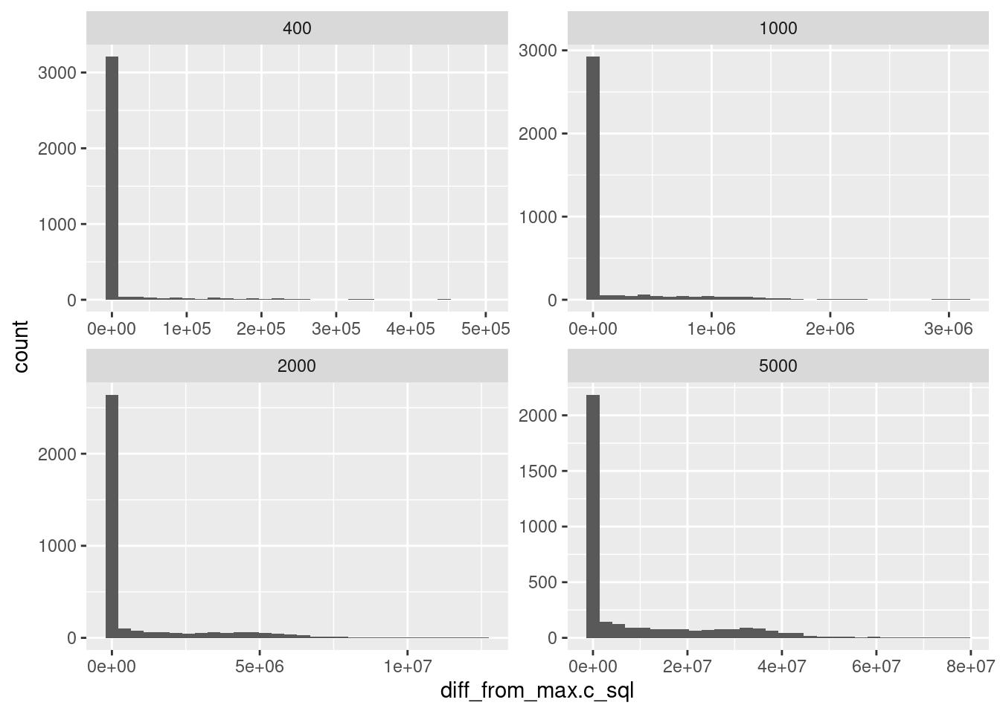
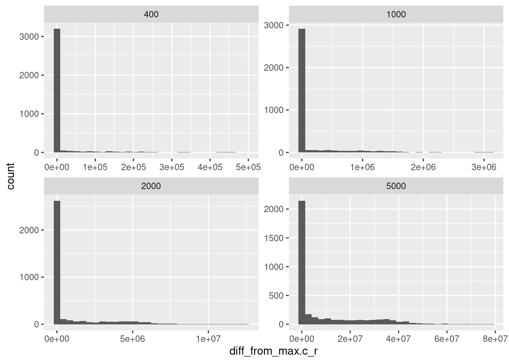
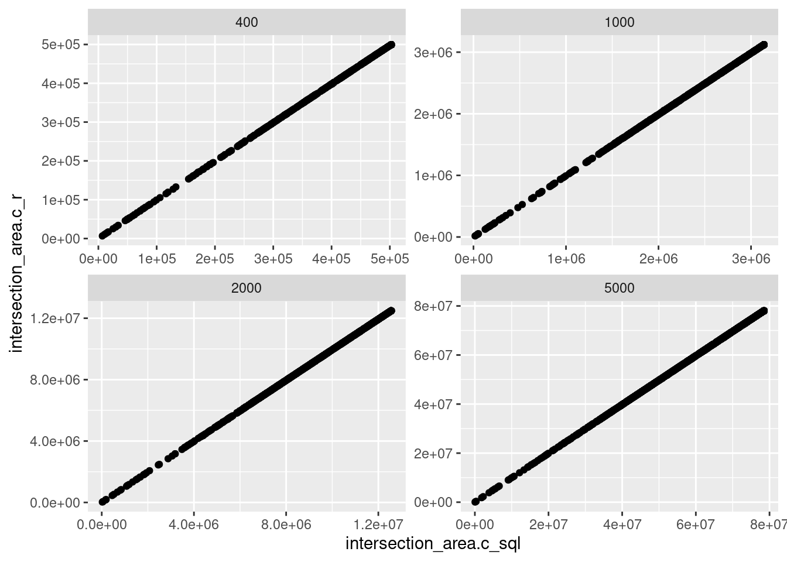
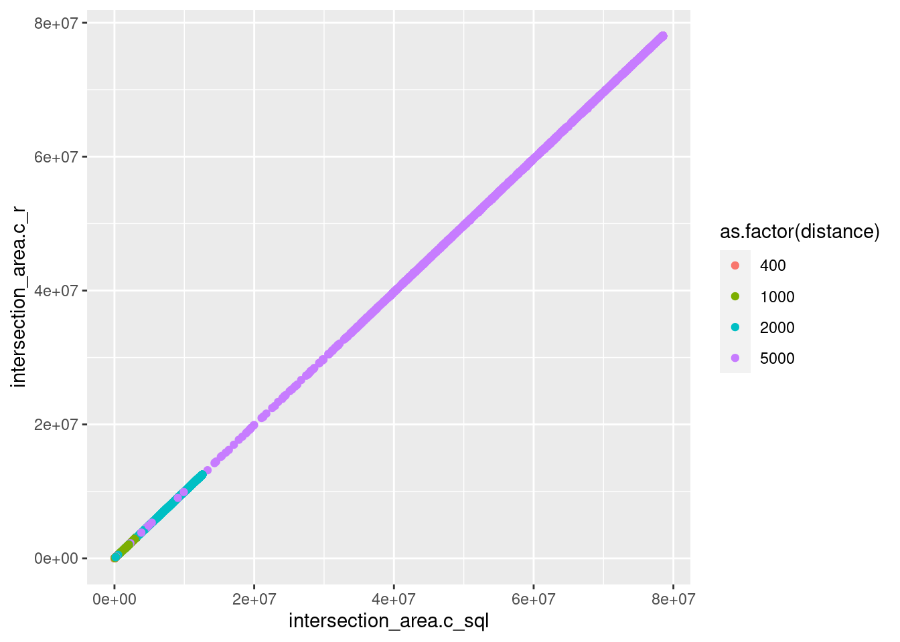
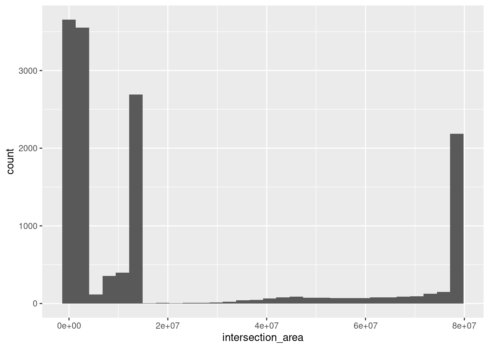
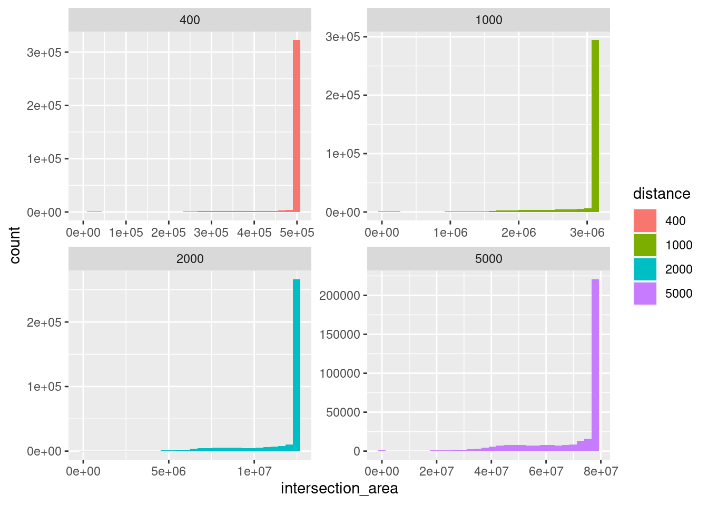

Home
```
compare R calculated neighbourhoods with SQL calculated neighbourhood
We recalculated a 1% random sample of meshblock neighbourhoods using the R sf package (n=3581), for each of the four neighbourhood distance threshholds. We reused the centroids calculated by postgis, because it is a weighted geographic centroid that is not the same as the centroid returned by the sf package. The R calculated neighbourhoods were broad similar to those calculated by postGIS, with all parameters within .05% of each other. The reason for the difference are as follows:
- differences in the methods of transformation between spatial reference systems
- differences in the way the buffer around the centroid is calculated (e.g. the number of segments in the circle around the centroid)
Postgis has about 0.58% larger area calculations than R
Load in postgis calculated data
################################################################################yy#####
con <- RPostgreSQL::dbConnect(DBI::dbDriver("PostgreSQL"),
user="dewoller", password=db_password,
host="localhost", port=5432, dbname="postgis_db")
dbGetQuery(con, "
---
select mb.mb_code16, distance, mb.to_mb_code16, intersection_area, proportion_covered
from meshblock_concordance mb
join meshblock_detail md using (mb_code16)
join df_mesh_centroids_sample sample using (mb_code16)
---
" ) %>%
as_tibble() %>%
{ . } -> df_concordance_sql
dbGetQuery(con, "
---
select mb.mb_code16, distance, mb.mb_category_name_2016, population_covered, intersection_area, category_proportion
from meshblock_statistics mb
join meshblock_detail md using (mb_code16)
join df_mesh_centroids_sample sample using (mb_code16)
---
" ) %>%
as_tibble() %>%
{ . } -> df_c_sql
df_c_sql %>%
group_by( mb_code16, distance) %>%
summarise( intersection_area = sum( intersection_area), .groups='drop') %>%
{ . } -> df_c_sql_total
################################################################################yy#####analysis - comparison at category level
- difference is the R calculated amount - SQL calculated amount at land use level
################################################################################yy#####
df_c_sql %>%
full_join( df_c_r, by=c( 'mb_code16', 'mb_category_name_2016', 'distance' ), suffix=c('.c_r','.c_sql')) %>%
mutate( diff= intersection_area.c_r - intersection_area.c_sql,
pct = diff / intersection_area.c_sql) %>%
arrange( desc( diff)) %>%
arrange( desc( pct)) %>%
{ . } -> df_diff
df_diff %>%
drop_na() %>%
summarise( across( where(is.numeric), .fns=c('mean'=mean, 'median'=median)))# A tibble: 1 x 14
distance_mean distance_median population_cove… population_cove…
<dbl> <dbl> <dbl> <dbl>
1 2648. 2000 5004. 20
# … with 10 more variables: intersection_area.c_r_mean <dbl>,
# intersection_area.c_r_median <dbl>, category_proportion_mean <dbl>,
# category_proportion_median <dbl>, intersection_area.c_sql_mean <dbl>,
# intersection_area.c_sql_median <dbl>, diff_mean <dbl>, diff_median <dbl>,
# pct_mean <dbl>, pct_median <dbl>df_diff %>%
ggplot( aes( diff)) + geom_histogram()`stat_bin()` using `bins = 30`. Pick better value with `binwidth`.Warning: Removed 102 rows containing non-finite values (stat_bin).
| Version | Author | Date |
|---|---|---|
| 43d374d | Dennis Wollersheim | 2020-09-24 |
df_diff %>%
ggplot( aes( diff)) + geom_histogram() +
facet_wrap(~distance, scale='free')`stat_bin()` using `bins = 30`. Pick better value with `binwidth`.Warning: Removed 102 rows containing non-finite values (stat_bin).
| Version | Author | Date |
|---|---|---|
| 43d374d | Dennis Wollersheim | 2020-09-24 |
df_diff %>%
ggplot( aes( intersection_area.c_sql, intersection_area.c_r, color=as.factor(distance))) +
geom_point()Warning: Removed 102 rows containing missing values (geom_point).
| Version | Author | Date |
|---|---|---|
| 43d374d | Dennis Wollersheim | 2020-09-24 |
df_diff %>%
filter( distance == 400)# A tibble: 10,235 x 9
mb_code16 distance mb_category_nam… population_cove… intersection_ar…
<chr> <dbl> <chr> <dbl> <dbl>
1 20498820… 400 Parkland 0 5168.
2 30206290… 400 Commercial 27.1 9356.
3 30396592… 400 Parkland 0 8520.
4 10464340… 400 Education 0 7826.
5 10829260… 400 Commercial 11 13078.
6 11000210… 400 Industrial 48 17475.
7 50322633… 400 Parkland 0 6806.
8 11204816… 400 Commercial 23.8 2666.
9 30358392… 400 Parkland 0 4976.
10 10751150… 400 Commercial 127. 25856.
# … with 10,225 more rows, and 4 more variables: category_proportion <dbl>,
# intersection_area.c_sql <dbl>, diff <dbl>, pct <dbl>grand total area coverage
- note that R calculated total is consistently less than the SQL calculated total
df_c_sql_total %>%
full_join( df_c_r_total, by=c( 'mb_code16', 'distance'), suffix=c('.c_r','.c_sql')) %>%
inner_join( distance_theoretical_totals, by='distance') %>%
mutate( diff= as.numeric(intersection_area.c_sql) - intersection_area.c_r ) %>%
mutate( diff_from_max.c_r = area_max - intersection_area.c_r) %>%
mutate( diff_from_max.c_sql = area_max - intersection_area.c_sql) %>%
arrange( desc( diff)) %>%
{ . } -> df_diff_total
df_diff_total %>%
ggplot( aes( diff)) + geom_histogram() +
facet_wrap(~distance, scale='free')`stat_bin()` using `bins = 30`. Pick better value with `binwidth`.
| Version | Author | Date |
|---|---|---|
| 43d374d | Dennis Wollersheim | 2020-09-24 |
df_diff_total %>%
ggplot( aes( diff_from_max.c_sql)) + geom_histogram() +
facet_wrap(~distance, scale='free')`stat_bin()` using `bins = 30`. Pick better value with `binwidth`.
| Version | Author | Date |
|---|---|---|
| 43d374d | Dennis Wollersheim | 2020-09-24 |
df_diff_total %>%
ggplot( aes( diff_from_max.c_r)) + geom_histogram() +
facet_wrap(~distance, scale='free')`stat_bin()` using `bins = 30`. Pick better value with `binwidth`.
| Version | Author | Date |
|---|---|---|
| 43d374d | Dennis Wollersheim | 2020-09-24 |
df_diff_total %>%
ggplot( aes( diff_from_max.c_r, diff_from_max.c_sql)) +
geom_point() +
facet_wrap(~distance, scale='free')
| Version | Author | Date |
|---|---|---|
| 43d374d | Dennis Wollersheim | 2020-09-24 |
df_diff_total %>%
ggplot( aes( intersection_area.c_sql, intersection_area.c_r)) +
geom_point() +
facet_wrap(~distance, scale='free')
| Version | Author | Date |
|---|---|---|
| 43d374d | Dennis Wollersheim | 2020-09-24 |
df_diff_total %>%
ggplot( aes( intersection_area.c_sql, intersection_area.c_r, color=as.factor(distance))) +
geom_point()
| Version | Author | Date |
|---|---|---|
| 43d374d | Dennis Wollersheim | 2020-09-24 |
df_c_r_total %>%
arrange( ( intersection_area)) %>%
ggplot( aes( intersection_area)) + geom_histogram()`stat_bin()` using `bins = 30`. Pick better value with `binwidth`.
| Version | Author | Date |
|---|---|---|
| 43d374d | Dennis Wollersheim | 2020-09-24 |
df_diff_total %>%
summarise( across(where(is_numeric), .fns=sum) ) %>% gt()Warning: Deprecated
Warning: Deprecated
Warning: Deprecated
Warning: Deprecated
Warning: Deprecated
Warning: Deprecated
Warning: Deprecated
Warning: Deprecated| distance | intersection_area.c_r | intersection_area.c_sql | area_max | diff | diff_from_max.c_r | diff_from_max.c_sql |
|---|---|---|---|---|---|---|
| 30080400 | 301948424615 | 303719482636 | 339301305702 | 1771058021 | 37352881087 | 35581823066 |
df_diff_total %>%
group_by(distance) %>%
summarise( across(where(is_numeric), .fns=sum) ) %>% gt()Warning: Deprecated
Warning: Deprecated
Warning: Deprecated
Warning: Deprecated
Warning: Deprecated
Warning: Deprecated
Warning: Deprecated`summarise()` ungrouping output (override with `.groups` argument)| distance | intersection_area.c_r | intersection_area.c_sql | area_max | diff | diff_from_max.c_r | diff_from_max.c_sql |
|---|---|---|---|---|---|---|
| 400 | 1731222111 | 1741501163 | 1800006927 | 10279051 | 68784815 | 58505764 |
| 1000 | 10583008624 | 10645570199 | 11250043293 | 62561575 | 667034668 | 604473093 |
| 2000 | 41369311325 | 41613122233 | 45000173170 | 243810908 | 3630861845 | 3387050937 |
| 5000 | 248264882554 | 249719289042 | 281251082313 | 1454406487 | 32986199758 | 31531793271 |
df_c_r %>%
filter( mb_code16 == '50113130000')# A tibble: 0 x 4
# … with 4 variables: mb_code16 <chr>, mb_category_name_2016 <chr>,
# distance <dbl>, intersection_area <dbl>compare individual concordances
df_mesh_within_range_area %>%
rename( to_mb_code16 = mb_code16.1) %>%
inner_join( df_concordance_sql, by=c('mb_code16','to_mb_code16', 'distance'), suffix=c('.c_r','.c_sql')) %>%
mutate( diff= intersection_area.c_r - intersection_area.c_sql,
pct = diff / intersection_area.c_sql) %>%
{ . } -> df_both_concord
df_both_concord %>%
drop_na() %>%
filter( pct != Inf) %>%
select(diff, pct) %>%
summarise( across( where(is.numeric), .fns=c('mean'=mean, 'median'=median)))# A tibble: 1 x 4
diff_mean diff_median pct_mean pct_median
<dbl> <dbl> <dbl> <dbl>
1 344. 0.00000000358 4314. 1.78e-13df_both_concord %>%
drop_na() %>%
filter( pct != Inf) %>%
group_by(distance) %>%
select(diff, pct) %>%
summarise( across( where(is.numeric), .fns=c('mean'=mean, 'median'=median)))Adding missing grouping variables: `distance``summarise()` ungrouping output (override with `.groups` argument)# A tibble: 4 x 5
distance diff_mean diff_median pct_mean pct_median
<dbl> <dbl> <dbl> <dbl> <dbl>
1 400 141. 8.41e+1 1.36 6.72e- 3
2 1000 217. 1.80e-8 44162. 9.65e-13
3 2000 279. 6.41e-9 14.7 3.22e-13
4 5000 372. 2.24e-9 2397. 1.10e-13dbGetQuery(con, "
---
select mb.mb_code16, distance, mb.mb_category_name_2016, population_covered, intersection_area, category_proportion
from meshblock_statistics mb
join meshblock_detail md using (mb_code16)
---
" ) %>%
as_tibble() %>%
{ . } -> df_c_sql_all
df_c_sql_all %>%
group_by( mb_code16, distance) %>%
summarise( intersection_area = sum( intersection_area), .groups='drop') %>%
{ . } -> df_c_sql_total
df_c_sql_total %>%
mutate(distance=as.factor(distance)) %>%
ggplot( aes( intersection_area, fill=distance)) +
geom_histogram() +
facet_wrap(~distance, scale='free')`stat_bin()` using `bins = 30`. Pick better value with `binwidth`.
| Version | Author | Date |
|---|---|---|
| 33edcf8 | Dennis Wollersheim | 2020-09-24 |
df_diff_total %>%
select( distance, intersection_area.c_sql, intersection_area.c_r) %>%
mutate( across( starts_with('inter'), .fn=function(x) {x/1000000})) %>%
group_by(distance) %>%
summarise( across( where(is.numeric), .fns=c('total'=sum))) %>%
mutate( difference = intersection_area.c_sql_total - intersection_area.c_r_total,
pct = round(difference / intersection_area.c_sql_total *100,2) ) %>%
{ . } -> df_diff_final`summarise()` ungrouping output (override with `.groups` argument) df_both_concord %>%
select( distance, starts_with('intersection_area')) %>%
nest( data = -distance) %>%
mutate(test = map(data, ~ cor.test(.x$intersection_area.c_r, .x$intersection_area.c_sql)),
tidied = map(test, broom::tidy)) %>%
mutate(n = map_int(data, nrow)) %>%
select(-test, -data) %>%
unnest(tidied) %>%
{ . } -> df_cor
df_diff_final %>%
set_names(c('Buffer size (m)', 'Postgis Total Area (km^2) ', 'R Total Area (km^2)', 'Difference', "% Difference")) %>%
inner_join( df_cor, by=c('Buffer size (m)'='distance')) %>%
gt()| Buffer size (m) | Postgis Total Area (km^2) | R Total Area (km^2) | Difference | % Difference | estimate | statistic | p.value | parameter | conf.low | conf.high | method | alternative | n |
|---|---|---|---|---|---|---|---|---|---|---|---|---|---|
| 400 | 1741.501 | 1731.222 | 10.27905 | 0.59 | 0.9999940 | 78017.18 | 0 | 73252 | 0.9999939 | 0.9999941 | Pearson's product-moment correlation | two.sided | 73254 |
| 1000 | 10645.570 | 10583.009 | 62.56157 | 0.59 | 0.9999943 | 158638.04 | 0 | 288354 | 0.9999942 | 0.9999943 | Pearson's product-moment correlation | two.sided | 288356 |
| 2000 | 41613.122 | 41369.311 | 243.81091 | 0.59 | 0.9999943 | 277634.34 | 0 | 872587 | 0.9999943 | 0.9999944 | Pearson's product-moment correlation | two.sided | 872589 |
| 5000 | 249719.289 | 248264.883 | 1454.40649 | 0.58 | 0.9999926 | 510589.83 | 0 | 3875443 | 0.9999926 | 0.9999926 | Pearson's product-moment correlation | two.sided | 3875445 |
sessionInfo()R version 4.0.2 (2020-06-22)
Platform: x86_64-pc-linux-gnu (64-bit)
Running under: Ubuntu 20.04.1 LTS
Matrix products: default
BLAS: /usr/lib/x86_64-linux-gnu/blas/libblas.so.3.9.0
LAPACK: /usr/lib/x86_64-linux-gnu/lapack/liblapack.so.3.9.0
locale:
[1] LC_CTYPE=en_US.UTF-8 LC_NUMERIC=C
[3] LC_TIME=en_US.UTF-8 LC_COLLATE=en_US.UTF-8
[5] LC_MONETARY=en_US.UTF-8 LC_MESSAGES=en_US.UTF-8
[7] LC_PAPER=en_US.UTF-8 LC_NAME=C
[9] LC_ADDRESS=C LC_TELEPHONE=C
[11] LC_MEASUREMENT=en_US.UTF-8 LC_IDENTIFICATION=C
attached base packages:
[1] stats graphics grDevices utils datasets methods base
other attached packages:
[1] rvest_0.3.6 xml2_1.3.2 gt_0.2.2
[4] DT_0.15 leaflet_2.0.3 workflowr_1.6.2
[7] cleangeo_0.2-3 maptools_1.0-2 rgeos_0.5-5
[10] sp_1.4-2 geohash_0.4.0 multidplyr_0.0.0.9000
[13] osrm_3.3.3 RPostgreSQL_0.6-2 DBI_1.1.0
[16] furrr_0.1.0 future_1.18.0 fs_1.5.0
[19] readxl_1.3.1 s2_1.0.2.9000 sf_0.9-6
[22] janitor_2.0.1 rmarkdown_2.3 lubridate_1.7.9
[25] geosphere_1.5-10 forcats_0.5.0 stringr_1.4.0
[28] dplyr_1.0.2 purrr_0.3.4 readr_1.3.1
[31] tidyr_1.1.0 tibble_3.0.3 ggplot2_3.3.2
[34] tidyverse_1.3.0 drake_7.12.5 dotenv_1.0.2
[37] conflicted_1.0.4 nvimcom_0.9-102
loaded via a namespace (and not attached):
[1] colorspace_1.4-1 ellipsis_0.3.1 class_7.3-17 rprojroot_1.3-2
[5] snakecase_0.11.0 rstudioapi_0.11 farver_2.0.3 listenv_0.8.0
[9] fansi_0.4.1 codetools_0.2-16 knitr_1.30 jsonlite_1.7.1
[13] broom_0.7.0 dbplyr_1.4.4 Xmisc_0.2.1 compiler_4.0.2
[17] httr_1.4.2 backports_1.1.10 assertthat_0.2.1 cli_2.0.2
[21] later_1.1.0.1 htmltools_0.5.0 prettyunits_1.1.1 tools_4.0.2
[25] igraph_1.2.5 gtable_0.3.0 glue_1.4.2 wk_0.3.2
[29] Rcpp_1.0.5 cellranger_1.1.0 vctrs_0.3.4 crosstalk_1.1.0.1
[33] xfun_0.17 globals_0.12.5 lifecycle_0.2.0 scales_1.1.1
[37] hms_0.5.3 promises_1.1.1 parallel_4.0.2 yaml_2.2.1
[41] memoise_1.1.0 sass_0.2.0 stringi_1.5.3 checkmate_2.0.0
[45] e1071_1.7-3 filelock_1.0.2 storr_1.2.1 rlang_0.4.7
[49] pkgconfig_2.0.3 evaluate_0.14 lattice_0.20-41 labeling_0.3
[53] htmlwidgets_1.5.1 tidyselect_1.1.0 magrittr_1.5 R6_2.4.1
[57] generics_0.0.2 base64url_1.4 txtq_0.2.3 whisker_0.4
[61] pillar_1.4.6 haven_2.3.1 foreign_0.8-79 withr_2.3.0
[65] units_0.6-7 modelr_0.1.8 crayon_1.3.4 utf8_1.1.4
[69] KernSmooth_2.23-17 progress_1.2.2 grid_4.0.2 blob_1.2.1
[73] git2r_0.27.1 reprex_0.3.0 digest_0.6.25 classInt_0.4-3
[77] httpuv_1.5.4 munsell_0.5.0